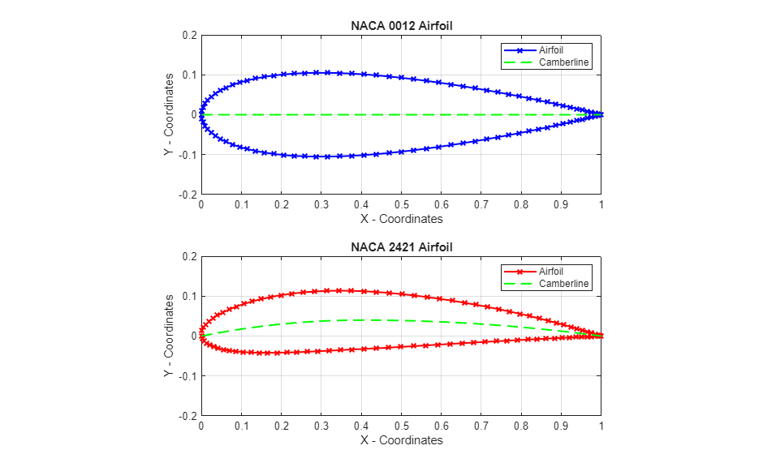
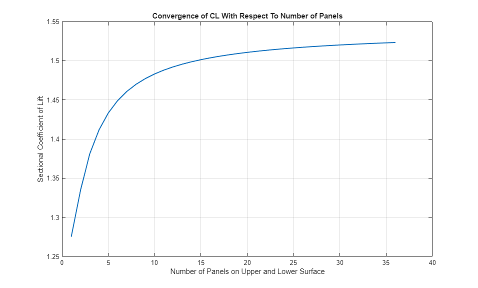
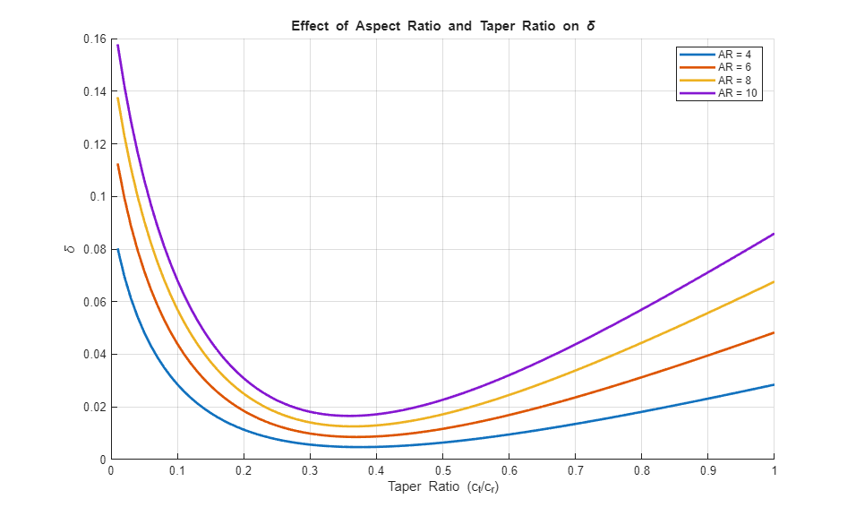

ASEN 3802 -- Lab 3 -- Aerodynamics Lab
Contents
- Summary:
- Author(s): Graeme Appel, McKenna Coakley, Jake Wzientek, Cullen Watz
- Last Revised: 4/14/2026
- Housekeeping
- Task 1 -- Plot of NACA 0021 and NACA 2421 using 50 panels
- Task 2 --
- Task 3
- User Defined Functions
- 1.) NACA Airfoil point distributions and plotting
- Define Thickness Distribution of Airfoil
- Define Camber Line Distribution
- Define X and Y locations over the upper and lower surfaces
- Group into final output variables
- 2.) Vortex Panel Method Code
- 3.) Thin Airfoil Theory Code
- Define Thickness Distribution of Airfoil
- Define theta_0 in terms of x using chord line equation:
- Define dz/dx for each part of the piecewise function bounds w.r.t length x
- Define zero lift angle of attack with equation 4.61 and numerically integrate
- 4.) Prandtl Lifting Line Theory Code
Summary:
-- PART 1-- Task 1: models a 4 digit NACA airfoil both numerically and with an equi-angular representation. Task 2: Uses vortex panel code provided to find the coefficient of lift for different NACA airfoil cases. Also, we will analyze where the coefficient of lift converges based on the number of panels used, N. Task 3: Using thin airfoil theory equations, the effects of airfoil thickness on overall lift will be evaluated. -- PART 2 -- Task 1: Created Pradtl's lifting line theory function and recreated Anderson 5.20 plot to validate
Author(s): Graeme Appel, McKenna Coakley, Jake Wzientek, Cullen Watz
Last Revised: 4/14/2026
Housekeeping
clc
clear
close all
Task 1 -- Plot of NACA 0021 and NACA 2421 using 50 panels
% Define Necessary parameters % NACA 0021 m = 0/100; p = 0/10; t = 21/100; % NACA 2421 m2 = 4/100; p2 = 4/10; t2 = 15/100; c = 1; N = 50; % Call Airfoil Distribution function for each case [x_b, y_b, x_c, y_c] = NACA_Airfoils(m,p,t,c,N); [x_b2, y_b2, x_c2, y_c2] = NACA_Airfoils(m2,p2,t2,c,N); % Plot both airfoil distributions figure(); subplot(2, 1, 1); plot(x_b, y_b, "-xb", "LineWidth",1.5) hold on plot(x_c, y_c, "--g", "LineWidth",1.5) axis equal % implement correcting dimensions so that MATLAB does not stretch the y-axis xlim([0 c]) % set correct graph dimensions ylim([-0.2*c 0.2*c]) grid on xlabel('X - Coordinates'); ylabel('Y - Coordinates'); title("NACA 0012 Airfoil") legend('Airfoil', 'Camberline') subplot(2, 1, 2); plot(x_b2, y_b2, "-xr", "LineWidth",1.5) hold on; plot(x_c2, y_c2, "--g", "LineWidth",1.5) axis equal % implement correcting dimensions so that MATLAB does not stretch the y-axis xlim([0 c]) % set correct graph dimensions ylim([-0.2*c 0.2*c]) grid on xlabel('X - Coordinates'); ylabel('Y - Coordinates'); title("NACA 2421 Airfoil"); legend('Airfoil', 'Camberline') print('task1', '-dpng', '-r500'); clc clear

Task 2 --
Define test variables:
i = 1; m = 0/100; p = 0/10; t = 21/100; c = 1; CL_old = 0; error = 1.5; N_exact = 500; alpha = 12; % [deg] v_inf = 50; % [m/s] Numerical_Plot = 1; % variable to turn on numerical plots for vortex panel method % Call numerical function to get point distribution [x_b, y_b] = NACA_Airfoils(m,p,t,c,N_exact); % Call vortex panel method code to get output plot [CL_accurate] = Vortex_Panel(x_b, y_b, v_inf, alpha); N = 2; % Loop through different vortex panel cases with incrementing N to determine most ideal amount of % panels to keep error under 1%. while error > 1 alpha = 12; % [deg] v_inf = 50; % [m/s] Numerical_Plot = 1; % variable to turn on numerical plots for vortex panel method % Call numerical function to get point distribution [x_b, y_b] = NACA_Airfoils(m,p,t,c,N); % Call vortex panel method code to get output plot [CL(i)] = Vortex_Panel(x_b, y_b, v_inf, alpha); % error = abs((CL(i)- CL_accurate)/(CL_accurate)) * 100; error = abs((CL_accurate- CL(i))/(CL(i))) * 100; % Assign new CL_value for the same error case if error > 1 N = N+1; CL_old = CL(i); i = i + 1; end end N_vec = 1:length(CL); disp(['Number of total panels: ', num2str(2*(length(N_vec)))]) % Plot the Number of panels versus the changing/converging CL value figure(); plot(N_vec, CL,"LineWidth",1.5); xlabel('Number of Panels on Upper and Lower Surface'); ylabel('Sectional Coefficient of Lift'); title('Convergence of CL With Respect To Number of Panels') grid on % Output results to a table Results_Table = table( ... N_exact, CL_accurate, ... N_vec(end), CL(end), error(end), ... 'VariableNames', {'N_exact', 'CL_exact', 'N_predicted', 'CL_predicted', 'Percent_Error'}); disp(Results_Table)

Task 3
% Call thin airfoil theory function for each different airfoil case --> Note: for each case, alpha % varies from -8 degrees to 8 degrees % NACA 0006 case m = 0/100; p = 0/10; t = 6/100; c = 1; N_req = N_vec(end); % vortex panels required is the last value of the converging/increasing N vector % Call thin airfoil theory function to determine conditions under thin airfoil theory assumptions [alpha_L0_thin_0006, alpha_L0_vort_0006, cl_thin_0006, CL_vort_0006, slope_thin_0006, slope_vort_0006] = Thin_Airfoil_Theory(m, p, t, c, N_req, alpha, v_inf); % NACA 0012 case m = 0/100; p = 0/10; t = 12/100; c = 1; N_req = N_vec(end); % vortex panels required is the last value of the converging/increasing N vector % Call thin airfoil theory function to determine conditions under thin airfoil theory assumptions [alpha_L0_thin_0012, alpha_L0_vort_0012, cl_thin_0012, CL_vort_0012, slope_thin_0012, slope_vort_0012] = Thin_Airfoil_Theory(m, p, t, c, N_req, alpha, v_inf); % NACA 0018 case m = 0/100; p = 0/10; t = 18/100; c = 1; N_req = N_vec(end); % vortex panels required is the last value of the converging/increasing N vector % Call thin airfoil theory function to determine conditions under thin airfoil theory assumptions [alpha_L0_thin_0018, alpha_L0_vort_0018, cl_thin_0018, CL_vort_0018, slope_thin_0018, slope_vort_0018] = Thin_Airfoil_Theory(m, p, t, c, N_req, alpha, v_inf); % Read in experimental data % experimental data from digitizer data1 = load("NACA0006.mat"); data1 = data1.data; AoA_exp0006 = data1(:,1); CL_exp0006 = data1(1,:); % Find the measured angle of attack value (i.e AoA_exp0006) that occurs when the CL values are % closest to 0 (for zero lift angle of attack) [~, alpha_index_0006] = min(abs(CL_exp0006)); % finds index where CL is closest to 0 AoA_L0_exp0006 = AoA_exp0006(alpha_index_0006); % Use this value for table comparison data2 = load("NACA0012.mat"); data2 = data2.data; AoA_exp0012 = data2(:,1); CL_exp0012 = data2(1,:); % Find the measured angle of attack value (i.e AoA_exp0006) that occurs when the CL values crosses 0 [~, alpha_index_0012] = min(abs(CL_exp0012)); % finds index where CL is closest to 0 AoA_L0_exp0012 = AoA_exp0012(alpha_index_0012); % Use this value for table comparison data3 = load("NACA2412.mat"); data3 = data3.data; AoA_exp2412 = data3(:,1); CL_exp2412 = data3(1,:); data4 = load("NACA4412.mat"); data4 = data4.data; AoA_exp4412 = data4(:,1); CL_exp4412 = data4(1,:); % Create output tables % Output table comparing zero lift angle of attack for each case % NACA 0006 Airfoil Results_Table = table( ... alpha_L0_vort_0006, alpha_L0_thin_0006, AoA_L0_exp0006, ... 'VariableNames', {'Vortex_Panel_Method', 'Thin_Airfoil_Theory', 'Experimental_Data'}); disp(Results_Table) % NACA 0012 Airfoil Results_Table = table( ... alpha_L0_vort_0012, alpha_L0_thin_0012, AoA_L0_exp0012, ... 'VariableNames', {'Vortex_Panel_Method', 'Thin_Airfoil_Theory', 'Experimental_Data'}); disp(Results_Table) % NACA 0018 Airfoil -- Note experimental data does not exist for this configuration Results_Table = table( ... alpha_L0_vort_0018, alpha_L0_thin_0018, ... 'VariableNames', {'Vortex_Panel_Method', 'Thin_Airfoil_Theory'}); disp(Results_Table) % Output table comparing lift curve slope for each case % NACA 0006 Airfoil Results_Table = table( ... slope_vort_0006, slope_thin_0006, AoA_exp0006(1), ... 'VariableNames', {'Vortex_Panel_Method', 'Thin_Airfoil_Theory', 'Experimental_Data'}); disp(Results_Table) % NACA 0012 Airfoil Results_Table = table( ... slope_vort_0012, slope_thin_0012, AoA_exp0012(1), ... 'VariableNames', {'Vortex_Panel_Method', 'Thin_Airfoil_Theory', 'Experimental_Data'}); disp(Results_Table) % NACA 0018 Airfoil -- Note experimental data does not exist for this configuration Results_Table = table( ... slope_vort_0018, slope_thin_0018, ... 'VariableNames', {'Vortex_Panel_Method', 'Thin_Airfoil_Theory'}); disp(Results_Table) % ---------------- PART 2 ------------------------- % example inputs to test PLLT function a0_t = 2*pi; a0_r = 2*pi; aero_t = 8; aero_r = 8; geo_t = 15; geo_r = 15; N = 100; b = 1; % define specified AR and taper ratio values to replicate Anderson figure 5.20 AR_vec = [4 6 8 10]; taper_ratio = linspace(0.01,1,100); % Preallocate delta for plot delta = zeros(length(AR_vec), length(taper_ratio)); for k = 1:length(AR_vec) AR = AR_vec(k); for i = 1:length(taper_ratio) % compute geometric inputs based on AR and taper ratio c_r = (2*b)./ (AR * (1+taper_ratio(i))); c_t = taper_ratio(i) * c_r; [e(k,i),c_L,c_Di] = PLLT(b,a0_t,a0_r,c_t,c_r,aero_t,aero_r,geo_t,geo_r,N); delta(k,i) = (1/e(k,i)) - 1; end end figure; hold on; grid on; % Anderson 5.20 plot plot(taper_ratio, delta(1,:), 'LineWidth', 2); plot(taper_ratio, delta(2,:), 'LineWidth', 2); plot(taper_ratio, delta(3,:), 'LineWidth', 2); plot(taper_ratio, delta(4,:), 'LineWidth', 2); xlabel('Taper Ratio (c_t/c_r)') ylabel('\delta') title('Effect of Aspect Ratio and Taper Ratio on \delta') legend('AR = 4','AR = 6','AR = 8','AR = 10','Location','best')
User Defined Functions
1.) NACA Airfoil point distributions and plotting
function [x_b,y_b,x_camber,y_camber] = NACA_Airfoils(m,p,t,c,N)
% Goal/Purpose: Modeling a 4 digit NACA airfoil representation numerically by converting 4 digit % inputs into relevant variables and finding discrete x and y coordinates for the top and bottom of % the airfoil using numerically derived equations % Inputs: % 1.) m = max airfoil camber. This is the 1st digit (leftmost) of the 4 digit NACA airfoil % representation and represents the max camber of the chord in percentage of the chord. % 2.) p = location of max camber. This is the 2nd digit from the left of the 4 digit NACA airfoil % representation and represents the location of the max camber (measured from the leading edge) in % 1/10 of the chord. % 3.) t = max airfoil thickness. This is the last 2 digits of the 4 digit NACA airfoil % representation and represents the maximum thickness of the airfoil in percent of the chord. % 4.) c = total chord length of the airfoil % 5.) N = # of employed panels for vortex panel method over each surface % Outputs: % 1.) x_b = vector containing the x-location of all airfoil boundary points % 2.) y_b = vector containing the y-location of all airfoil boundary points
Define Thickness Distribution of Airfoil
for i = 1:N+1 theta_i = (i-1)*pi/N; % goes from 0 to pi x(i) = c/2 + c/2 * cos(theta_i); % x: c → 0 end %disp(length(x)); y_t = ((t * c)/0.2) * ((0.2969 .* sqrt(x./c)) - (0.1260*(x./c)) - (0.3516 .* (x./c).^2) + (0.2843 .* (x./c).^3) - (0.1036 .* (x./c).^4)); % numerical equation given %disp(length(y_t));
Define Camber Line Distribution
% preallocate variables: y_c = zeros(size(x)); dy_c = zeros(size(x)); zeta = zeros(size(x)); x_u = zeros(size(x)); x_L = zeros(size(x)); y_u = zeros(size(x)); y_L = zeros(size(x)); % Define piecewise function using if statements for i = 1:length(x)
if m == 0 || p == 0 y_c(i) = 0; dy_c(i) = 0; zeta(i) = 0; elseif x(i) < p*c y_c(i) = m * (x(i)/(p^2)) * ((2*p) - (x(i)/c)); % camber line distribution dy_c(i) = ((2*m)/p) - ((2*m)/(c*p^2))*x(i); % derivative of camber line distribution zeta(i) = atan(dy_c(i)); % compute zeta elseif x(i) >= p*c && x(i) <= c y_c(i) = m * ((c-x(i))/(1-p)^2) * (1 + (x(i)/c) - (2*p)); % camber line distribution dy_c(i) = (2*p*m)/(1-p)^2 -((2*m)/(c*(1-p)^2))*x(i); % derivative of camber line distribution zeta(i) = atan(dy_c(i)); % compute zeta else disp('Wrong x-value'); end
Define X and Y locations over the upper and lower surfaces
x_u(i) = x(i) - y_t(i)*sin(zeta(i)); % x-coordinates over the upper surface x_L(i) = x(i) + y_t(i)*sin(zeta(i)); % x-coordinates over the lower surface y_u(i) = y_c(i) + y_t(i)*cos(zeta(i)); % y-coordinates over the upper surface y_L(i) = y_c(i) - y_t(i)*cos(zeta(i)); % y-coordinates over the lower surface
end % Note: we must reverse the order of all lower distributions to plot clockwise % x_u_CW = flip(x_u); % y_u_CW = flip(y_u); % y_L_CW = -1*y_L_CW; % x_L_CW = -x_L_CW;
Group into final output variables
% Note: output most be clockwise starting and ending at the trailing edge % gets rid of duplicate values at leading edge x_b = [x_L, flip(x_u(1:end-1))]; y_b = [y_L, flip(y_u(1:end-1))]; x_camber = fliplr(x); y_camber = fliplr(y_c);
end
2.) Vortex Panel Method Code
function [CL] = Vortex_Panel(XB,YB,VINF,ALPHA) %%%%%%%%%%%%%%%%%%%%%%%%%%%%%%%%%%%% % Input: % % % % XB = Boundary Points x-location % % YB = Boundary Points y-location % % VINF = Free-stream Flow Speed % % ALPHA = AOA % % % % Output: % % % % CL = Sectional Lift Coefficient % %%%%%%%%%%%%%%%%%%%%%%%%%%%%%%%%%%%% %%%%%%%%%%%%%%%%%%%%%% % Convert to Radians % %%%%%%%%%%%%%%%%%%%%%% ALPHA = ALPHA*pi/180; %%%%%%%%%%%%%%%%%%%%% % Compute the Chord % %%%%%%%%%%%%%%%%%%%%% CHORD = max(XB)-min(XB); %%%%%%%%%%%%%%%%%%%%%%%%%%%%%%%%%% % Determine the Number of Panels % %%%%%%%%%%%%%%%%%%%%%%%%%%%%%%%%%% M = max(size(XB,1),size(XB,2))-1; MP1 = M+1; %%%%%%%%%%%%%%%%%%%%%%%%%%%%%%%%%%%%%%%%%%%%%%%%%%%%%%%%%%%%%%% % Intra-Panel Relationships: % % % % Determine the Control Points, Panel Sizes, and Panel Angles % %%%%%%%%%%%%%%%%%%%%%%%%%%%%%%%%%%%%%%%%%%%%%%%%%%%%%%%%%%%%%%% for I = 1:M IP1 = I+1; X(I) = 0.5*(XB(I)+XB(IP1)); Y(I) = 0.5*(YB(I)+YB(IP1)); S(I) = sqrt( (XB(IP1)-XB(I))^2 +( YB(IP1)-YB(I))^2 ); THETA(I) = atan2( YB(IP1)-YB(I), XB(IP1)-XB(I) ); SINE(I) = sin( THETA(I) ); COSINE(I) = cos( THETA(I) ); RHS(I) = sin( THETA(I)-ALPHA ); end %%%%%%%%%%%%%%%%%%%%%%%%%%%%%%%%%%%%%%%%%% % Inter-Panel Relationships: % % % % Determine the Integrals between Panels % %%%%%%%%%%%%%%%%%%%%%%%%%%%%%%%%%%%%%%%%%% for I = 1:M for J = 1:M if I == J CN1(I,J) = -1.0; CN2(I,J) = 1.0; CT1(I,J) = 0.5*pi; CT2(I,J) = 0.5*pi; else A = -(X(I)-XB(J))*COSINE(J) - (Y(I)-YB(J))*SINE(J); B = (X(I)-XB(J))^2 + (Y(I)-YB(J))^2; C = sin( THETA(I)-THETA(J) ); D = cos( THETA(I)-THETA(J) ); E = (X(I)-XB(J))*SINE(J) - (Y(I)-YB(J))*COSINE(J); F = log( 1.0 + S(J)*(S(J)+2*A)/B ); G = atan2( E*S(J), B+A*S(J) ); P = (X(I)-XB(J)) * sin( THETA(I) - 2*THETA(J) ) ... + (Y(I)-YB(J)) * cos( THETA(I) - 2*THETA(J) ); Q = (X(I)-XB(J)) * cos( THETA(I) - 2*THETA(J) ) ... - (Y(I)-YB(J)) * sin( THETA(I) - 2*THETA(J) ); CN2(I,J) = D + 0.5*Q*F/S(J) - (A*C+D*E)*G/S(J); CN1(I,J) = 0.5*D*F + C*G - CN2(I,J); CT2(I,J) = C + 0.5*P*F/S(J) + (A*D-C*E)*G/S(J); CT1(I,J) = 0.5*C*F - D*G - CT2(I,J); end end end %%%%%%%%%%%%%%%%%%%%%%%%%%%%%%%%%%%%%%%% % Inter-Panel Relationships: % % % % Determine the Influence Coefficients % %%%%%%%%%%%%%%%%%%%%%%%%%%%%%%%%%%%%%%%% for I = 1:M AN(I,1) = CN1(I,1); AN(I,MP1) = CN2(I,M); AT(I,1) = CT1(I,1); AT(I,MP1) = CT2(I,M); for J = 2:M AN(I,J) = CN1(I,J) + CN2(I,J-1); AT(I,J) = CT1(I,J) + CT2(I,J-1); end end AN(MP1,1) = 1.0; AN(MP1,MP1) = 1.0; for J = 2:M AN(MP1,J) = 0.0; end RHS(MP1) = 0.0; %%%%%%%%%%%%%%%%%%%%%%%% % Solve for the gammas % %%%%%%%%%%%%%%%%%%%%%%%% GAMA = AN\RHS'; %%%%%%%%%%%%%%%%%%%%%%%%%%%%%%%%%%%%%%%%%%%%%%%%%%%%%%%%%%%% % Solve for Tangential Veloity and Coefficient of Pressure % %%%%%%%%%%%%%%%%%%%%%%%%%%%%%%%%%%%%%%%%%%%%%%%%%%%%%%%%%%%% for I = 1:M V(I) = cos( THETA(I)-ALPHA ); for J = 1:MP1 V(I) = V(I) + AT(I,J)*GAMA(J); end CP(I) = 1.0 - V(I)^2; end %%%%%%%%%%%%%%%%%%%%%%%%%%%%%%%%%%%%%%%%%%% % Solve for Sectional Coefficient of Lift % %%%%%%%%%%%%%%%%%%%%%%%%%%%%%%%%%%%%%%%%%%% CIRCULATION = sum(S.*V); CL = 2*CIRCULATION/CHORD; end
Number of total panels: 72
N_exact CL_exact N_predicted CL_predicted Percent_Error
_______ ________ ___________ ____________ _____________
500 1.538 36 1.5232 0.97338
3.) Thin Airfoil Theory Code
function [alpha_L0_thin, alpha_L0_vort, cl_thin, CL_vort, slope_thin, slope_vort] = Thin_Airfoil_Theory(m, p, t, c, N_ideal, alpha,v_inf)
% Goal/Purpose: Find zero lift angle of attack using thin airfoil theory and computing equation 4.61 % in anderson. Note that we already have dz/dx from previous derivation input piecewise into our % NACA_Airfoils function. Then, simply solve for theta from the equation: x = (c/2)(1-cos(theta)) % and plug this in for theta and numerically integrate. % Inputs: % 2.) m = max airfoil camber. This is the 1st digit (leftmost) of the 4 digit NACA airfoil % representation and represents the max camber of the chord in percentage of the chord. % 3.) p = location of max camber. This is the 2nd digit from the left of the 4 digit NACA airfoil % representation and represents the location of the max camber (measured from the leading edge) in % 3.) t = max airfoil thickness. This is the last 2 digits of the 4 digit NACA airfoil % representation and represents the maximum thickness of the airfoil in percent of the chord. % 4.) c = chord length of given airfoil configuration % 1/10 of the chord. % 4.) N_ideal = ideal number of vortex panels to get within 1% error % 5.) alpha = arbitrary input angle of attack value(s) in vector form % Outputs: % 1.) alpha_L0 = zero lift angle of attack using thin airfoil theory alpha_vec = linspace(-8,8,N_ideal); %create an angle of attack vector cooresponding to experimental trends alpha_rad = (pi/180) .* alpha_vec;
Define Thickness Distribution of Airfoil
% Equiangular distribution for i = 1:N_ideal+1 theta_i = (i-1)*pi/N_ideal; % goes from 0 to pi x(i) = c/2 + c/2 * cos(theta_i); % x: c → 0 end % y_t = ((t * c)/0.2) * ((0.2969 .* sqrt(x./c)) - (0.1260*(x./c)) - (0.3516 .* (x./c).^2) + (0.2843 .* (x./c).^3) - (0.1036 .* (x./c).^4)); % numerical equation
Define theta_0 in terms of x using chord line equation:
theta_0 = acos( (1 - x.*(2/c)) );
Define dz/dx for each part of the piecewise function bounds w.r.t length x
for i = 1:length(x) if m == 0 || p == 0 % for if there are any symmetric airfoil components dz_dx(i) = 0; elseif x(i) >= 0 && x(i) < p*c % 1st part of piecewise function dz_dx(i) = ((2*m)/p) - ((2*m)/(c*p^2))*x(i); % derivative of camber line distribution elseif x(i) >= p*c && x(i) <= c dz_dx(i) = (2*p*m)/(1-p)^2 -((2*m)/(c*(1-p)^2))*x(i); % derivative of camber line distribution else disp('Wrong x-value'); end end
Define zero lift angle of attack with equation 4.61 and numerically integrate
integrand = dz_dx.*(cos(theta_0) - 1); alpha_L0_thin = (-1/pi) * trapz(theta_0, integrand); % computing zero lift angle of attack in [rad] w.r.t theta using numerical integration % loop through for a range of changing alpha values [x_b, y_b] = NACA_Airfoils(m,p,t,c,N_ideal); % loop over all alpha vector values to get vector outputs of CL and cl for each alpha case for i = 1:length(alpha_vec) CL_vort(i) = Vortex_Panel(x_b, y_b, v_inf, alpha_vec(i)); cl_thin(i) = (2*pi)*(alpha_rad(i) - alpha_L0_thin); % compute sectional lift coefficient with given alpha value (note: alpha_L0 should be constant, only alpha input indexes) end % calculate lift slope for both vortex and thin airfoil methods: p_thin = polyfit(alpha_rad, cl_thin, 1); % ensure both alpha inputs and cl_thin inputs have units of radians slope_thin = p_thin(1); p_vort = polyfit(alpha_rad, CL_vort,1); % ensure both alpha inputs and cl_thin inputs have units of radians slope_vort = p_vort(1); intercept_vort = p_vort(2); alpha_L0_vort = -intercept_vort / slope_vort; % not sure if this is right. should AoA L0 be a vector or one value?
end
4.) Prandtl Lifting Line Theory Code
Goal/Purpose: Analyze the performance of a finite wing by modeling a sheet of bound horseshoe vortex filaments. It solves the fundamental equation of Prandtl's Lifitng Line Theory for finite wings with thick airfoils to find the fourier coefficients, which can then be used to solve for various performace perameters such as e, CL, and CDi.
% Inputs: % 1.) b = wing span (ft) % 2.) a0_t = cross-sectional lift slope at the tips (per radian) % 3.) a0_r = cross-sectional lift slope at the root (per radian) % 4.) c_t = chord at the tips (in feet) % 5.) c_r = chord at the root (in feet) % 6.) aero_t = zero-lift angle of attack at the tips (in degrees) % 7.) aero_r = zero-lift angle of attack at the root (in degrees) % 8.) geo_t = geometric angle of attack at the tips (in degrees) % 9.) geo_r = geometric angle of attack at the root (in degrees) % 10.) N = number of odd terms to include in the series expansion for circulation % Outputs: % 1.) e = span efficiency factor % 2.) C_L = coefficient of lift % 3.) C_Di = induced coefficient of drag function [e,c_L,c_Di,delta] = PLLT(b,a0_t,a0_r,c_t,c_r,aero_t,aero_r,geo_t,geo_r,N) % convert angles of attack to radians aero_t = aero_t * (pi/180); aero_r = aero_r * (pi/180); geo_t = geo_t * (pi/180); geo_r = geo_r * (pi/180); % satisfying the fundamental equation at N locations thetas = (1:N) * pi/(2*N); % using odd terms n = 1:2:(2*N-1); % non-dimensionalize distance along the wing y = (b/2) .* cos(thetas); y_normalized = abs(y)/(b/2); % create linear spans along wing of inputs based on non-dimensionalization c = c_r + (c_t - c_r) .* y_normalized; a0 = a0_r + (a0_t - a0_r) .* y_normalized; AoA_L0 = aero_r + (aero_t - aero_r) .* y_normalized; AoA_geo = geo_r + (geo_t - geo_r) .* y_normalized; % [b] = [A][x] where [x] contain fourier coefficients A1, A2 .... b_vec = (AoA_geo - AoA_L0)'; % i corresponds to theta, j corresponds to N % generate A matrix using the fundamental equation of PLLT for i = 1:length(n) for j = 1:length(n) A_mat(i,j) = ((4*b)/(a0(i)*c(i))* sin(n(j)*thetas(i)) + (n(j) * ... (sin(n(j)*thetas(i))/sin(thetas(i))))); end end % x corresponds to Fourier coefficient column vector x = A_mat\b_vec; % solve for delta using solved Fourier Coefficients delta = 0; for i = 2:length(n) delta = delta + (n(i) * (x(i)/x(1))^2); end % span efficiency factor e = 1 / (1 + delta); % planform area S = (b/2)*(c_r + c_t); % Aspect ratio AR = b^2/S; % Solve for coefficient of lift using first fourier term c_L = x(1)*pi*AR; % compute Cdi by summing fourier coefficients sum = 0; for i = 1:length(n) sum = sum + (n(i) * x(i)^2) * (pi/2); c_Di = ((2*b^2)/S) * sum; end end
